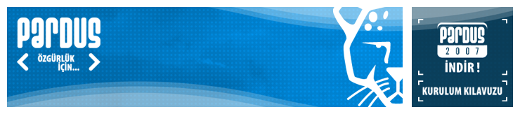

 Belgeler
Belgeler
| Sık Sorulan Sorular | |||
| Çok yakında... Pardus 2007 Kurulum ve Kullanım Kılavuzu | |||
| Nasıl Yardım Ederim (Kalite) (25/02/2005) | HTML | HTML (tek sayfa) | |
| Yeni Geliştirici Kılavuzu (25/02/2005) | HTML | HTML (tek sayfa) | |
| Grafik Arayüz Tasarım Kılavuzu (22/06/2006) | HTML (tek sayfa) | ||
| Proje Ana Sözleşmesi (25/02/2005) | HTML | HTML (tek sayfa) | |
| Bilişim Okur Yazarı (04/11/2004) | HTML | HTML (tek sayfa) | |
| Temel Masaüstü İhtiyaçları (04/11/2004) | HTML | HTML (tek sayfa) | |
| Neden LyX? (25/02/2005) | HTML | HTML (tek sayfa) | |
| Teknik belgelerimize, projeler sayfasından ait oldukları projelere giderek ulaşabilirsiniz. | |||
Bu web sitesinde bulunan bilgi ve belgelerin, kaynak gösterilmek koşulu ile kullanılması serbesttir.
Pardus markası ve logotipi TÜBİTAK'ın tescilli markasıdır. Kullanım koşulları için Yasal Uyarı bölümünü inceleyiniz.
Bilgi ve önerileriniz için bilgi at pardus.org.tr
TÜBİTAK - UEKAE, PK.74 41470, Gebze / Kocaeli.